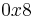
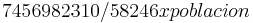

De: La Frikipedia, la enciclopedia extremadamente seria.
De: La Frikipedia, la enciclopedia extremadamente seria. De: La Frikipedia, la enciclopedia extremadamente seria.
| De la serie ciudades del mundo: | |||||
| Burgos | |||||
| |||||
| Topónimo oficial | Ciudad del Frío o Ciudad de Papa Noel | ||||
| País | Burgundi, Burundi o El País del Señor de las cejas enormes | ||||
| Código postal |  | ||||
| Superficie |  | ||||
| Altitud | excesivamente baja | ||||
| Distancia | a 0 km de Burgos | ||||
| Fundación | Solo Dios lo sabe | ||||
| Población | exactamente los mismos que Burgos | ||||
| Gentilicio | Burgaleses, Burguenses para n00bs, emos, etc. | ||||
| Alcalde | Un señó mu cruel (PP) | ||||
| | |||||
Burgos, ciudad capital de Burgundi o Burundi. En esta ciudad se produjeron acontecimientos muy importantes como son:
Está ubicada en algún kilometro de la penosa carretera del infierno de las obras de la A1
Es decir:
En "desfinitiva" = está entre Washington, el Ártico, Flippilandia y la Diosfera.
Muy muy bajas, tanto que en el telediario no hay año que en invierno no salga por haber logrado la minimááá temperatura en el país del señor de las cejas grandes España.
Las fiestas de Burgos (San Pedro y San Pablo) tienen la mala costumbre de que siempre caen una vez que ya te han dado las vacaciones de verano, entonces, ¿¿para qué las quiero?? Muy sencillo:
Burgos de deporte no tiene casi ná:
El Burgundi F.C. es el mejor equipo de furbo de tó Burgos, desde la temerosa terminal del Aeropuerto de Villafría hasta las peligrosas calles de Bakimet. Curiosidades del Burgundi F.C.:
Su estadio es el Plantío o, para n00bs, emos, incultos, etc la poblacion más mejor, el patatal.
Se le conoce por ser el mejor equipo de baloncesto de Burgos, aunque solo los frikis entusiastas del baloncesto saben si es bueno, malo o en que liga juega.
Nadie sabe si hay más deportes que se practique de manera tan seria como lo Frikipedia
Burgos no tiene metro, pero tiene un buen sistema de autobuses que todo buen jubilado burgalés debe conocer de memoria o no volverá a ser aceptado por sus compañeros para ver las mejores obras de Burgos.
Burgos, aunque parezca bochornoso, rídiculo y patético increíble, INCREÍBLE, tiene AEROPUERTO (Aeropuerto de Burgos). Aeropuerto que no usa ni Dioh.
También consta de una nueva estación de tren a la que dentro de dos años según el gobierno del señó de las cejas grandes de España llegara el AVE
Hace unos años (2008), el ayuntamiento de Burgos pensó en que se podría reutilizar la antigua zona de la vía del tren que cruzaba la ciudad para poner un, un, un TRANVÍA. Un cutre tranvía que recorrería la ciudad de lado a lado. Esta idea parece ser que ha sido descartada.
Basicamente se basa en:
Los monumentos que dice Dios que hay que rendir culto más importantes de Burgos son:
Son unas excavaciones muy antiguas es un lugar donde muchos señores con brochas quitan el polvo de las más polvorientas piedras existentes y los dicen que esas piedras se tratan de huesos del antepasado de los tatarabuelos de Chiquito de la Calzada y Dios
Autor(es):